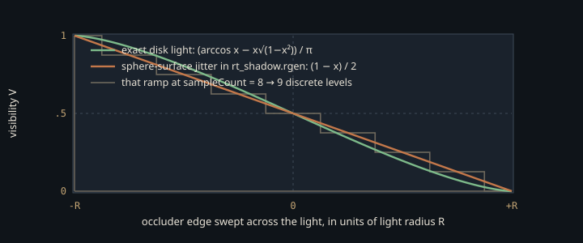

Monograph · Tree · ← Module hub · RT shadow technique
hybrid
RT shadow technique
init → SBT → render visibility from GBuffer.
The one term the GBuffer cannot hold
A deferred GBuffer stores everything the lighting equation needs at a point — position, normal, albedo, roughness, metallic — except the one quantity that is not a property of the point at all. Visibility depends on the whole scene along a ray. Cascade shadow maps answer it by re-rasterising depth from the light, at a pass per cascade and the cost of projective aliasing, cascade seams and a bias nobody gets right. `RTShadowTechnique` asks the TLAS instead: no light-space projection, no cascade split, no depth-map resolution to alias against. It has a bias of its own and it cannot see an alpha mask — both below.
The result is one screen-resolution channel, `R8_UNORM`, 0 = shadowed, 1 = lit,
imageInfo.format = VK_FORMAT_R8_UNORM;ohao/render/rt/rt_shadow_technique.cpp:103which the deferred lighting fragment shader samples at binding 14 and multiplies into the BRDF result.
shadow = texture(rtShadowMask, inTexCoord).r;shaders/core/deferred_lighting.frag:249Binding the mask is also what switches the pipeline — though not at the line that looks like it does. `setRTShadowMask` raises flag bit 5 and clears the CSM bit, but neither write ever reaches the GPU: `execute` zeroes the whole flag word and rebuilds it from the bound views every frame, before pushing it.
m_params.flags = 0;ohao/render/deferred/deferred_lighting_pass.cpp:163In that rebuild the RT bit and the CSM bit are the two arms of a single if/else keyed on whether an RT shadow view is bound at all, so the two shadow systems are mutually exclusive by construction rather than by convention.
else if (m_shadowMapView != VK_NULL_HANDLE)ohao/render/deferred/deferred_lighting_pass.cpp:172The fragment shader repeats the structure, branching on bit 5 first and reaching CSM only through the `else`.
} else if ((pc.flags & 4u) != 0u && lightType == 0) {shaders/core/deferred_lighting.frag:250What the estimator actually computes
Direct lighting from an area source is
where $\Omega_\ell$ is the solid angle the light subtends at the shading point $x$, $f_r$ is the BRDF, $L_i$ the incident radiance, $\mathbf{n}$ the shading normal, and $V \in \{0,1\}$ the binary visibility along $\omega$. A one-channel mask cannot represent that integral. What this pair of passes evaluates is the separable approximation
where $\bar\omega$ is the direction to the light *centre*. The raygen shader produces $\bar V$ by averaging $N$ traced samples into the mask:
visibility /= float(sampleCount);shaders/rt/rt_shadow.rgen:110and the lighting pass multiplies that single number by a BRDF evaluated only at $\bar\omega$. Factoring $V$ out is exact wherever it is constant across the light — everywhere but the penumbra; inside one, the error is the covariance between visibility and the cosine-weighted BRDF over the source, the term a path tracer keeps and this one discards.
A ray tracing pipeline whose hit shader never runs
Three shader groups are compiled: raygen, miss, and a triangle hit group whose only member is an any-hit shader — `closestHitShader` is `VK_SHADER_UNUSED_KHR` in all three, and max recursion depth is one, since a visibility ray spawns nothing.
pipelineInfo.maxPipelineRayRecursionDepth = 1; // shadow rays don't recurseohao/render/rt/rt_shadow_technique.cpp:297The interesting part is the flag combination the raygen traces with: terminate-on-first-hit, force-opaque, and skip-closest-hit together.
uint rayFlags = gl_RayFlagsTerminateOnFirstHitEXT | gl_RayFlagsOpaqueEXT | gl_RayFlagsSkipClosestHitShaderEXT;shaders/rt/rt_shadow.rgen:65`gl_RayFlagsOpaqueEXT` forces every intersection to be treated as opaque, and opaque intersections do not invoke any-hit shaders. The any-hit stage in group 2 therefore never executes — and does not need to. The payload is set to `0.0` immediately before `traceRayEXT`, the miss shader is the only stage that can raise it, and a hit leaves the pre-set value alone.
shadowPayload = 1.0; // no occlusion = fully litshaders/rt/rt_shadow.rmiss:9The occlusion answer is delivered by a shader that did not run. `terminateRayEXT` in the `.rahit` is unreachable under the current flags; it becomes live the moment someone drops `gl_RayFlagsOpaqueEXT` for alpha-cutout foliage, which is presumably why it is compiled in at all.
terminateRayEXT;shaders/rt/rt_shadow.rahit:11The rejected alternative is a closest-hit shader reporting hit distance — the channel an NRD-style denoiser wants for sizing its spatial filter. What gives it up is `gl_RayFlagsTerminateOnFirstHitEXT`: traversal may stop at the first intersection it finds rather than continue until the nearest one is proven. The empty `closestHitShader` slots in all three groups follow from that flag — they are its consequence, not the reason for it. The price: this mask carries no distance signal, so its softness must come entirely from ray count.
Two penumbra samplers, one of them unreachable
Softness comes from jittering the sample target, and the shader has two geometries for it. A directional light gets a tangent basis around the light direction and an offset inside a disk of angular radius `lightRadius`, with $\sqrt{r_1}$ making samples uniform in disk area — a small-angle construction, since the offset is the angle rather than its tangent:
float angle = lightRadius * sqrt(r1);shaders/rt/rt_shadow.rgen:80For a point light it instead displaces the light *position* to a uniformly distributed point on a sphere of radius `lightRadius`:
float phi = acos(1.0 - 2.0 * r2);shaders/rt/rt_shadow.rgen:89Because $\cos\varphi = 1 - 2r_2$ is uniform on $[-1,1]$, this is a correct uniform-area sampler of the sphere *surface* — with a consequence worth naming. By Archimedes' hat-box theorem a uniform distribution on a sphere projects to a uniform distribution on any single axis, so an occluder edge sweeping across the source yields a **linear** visibility ramp, not the circular-segment S-curve a genuinely disk-shaped source produces. The difference shows at the two ends of the penumbra, where the true profile approaches full light and full shadow tangentially and the linear one arrives with a crease.

At the shipping sample count the quantisation matters more than the profile: eight rays admit nine distinct visibility levels. The randomness is a value hash of the pixel coordinate offset by fixed per-sample constants, with no frame index anywhere in the push constants, so the noise is frozen in screen space and never decorrelates on its own.
The directional branch is never taken in the shipping engine — the only caller hardcodes a point light.
si.lightType = 1; // point lightohao/render/deferred/deferred_renderer.cpp:399One mask, applied to every light
The hardcoding goes further than the light type. `DeferredRenderer` fills `ShadowInput` with a fixed light position of (0, 4.5, 0) — the Cornell-box key light — irrespective of the scene's light SSBO,
si.lightPosition = glm::vec3(0, 4.5f, 0);ohao/render/deferred/deferred_renderer.cpp:401then asks for eight rays at a 0.5-unit source radius.
m_rtShadow->setLightRadius(0.5f); // soft shadow — 0.5 unit light radiusohao/render/deferred/deferred_renderer.cpp:404m_rtShadow->setSampleCount(8); // 8 rays per pixel for penumbraohao/render/deferred/deferred_renderer.cpp:405`deferred_lighting.frag` then applies the mask *inside* its per-light loop. Every light in the scene is shadowed by the visibility of that one hardcoded point light, and because the RT branch pre-empts CSM rather than coexisting with it, a directional sun that previously had cascades gets it too. Enabling RT shadows is an improvement only for a scene whose key light matches the hardcoded one. The gap is in the wiring, not the algorithm: `ShadowInput` already carries direction, position, type and range per invocation, and the technique reads all four into its push constants.
Sharp edges
The ray origin is pushed a flat 0.05 world units along the shading normal, with `tmin` = 0.001 behind that:
vec3 origin = worldPos + N * 0.05;shaders/rt/rt_shadow.rgen:58The offset is absolute, not scaled by depth or texel footprint: too large for centimetre-scale detail, where contact shadows detach into the ray-traced form of peter-panning, and too small for a kilometre-scale scene.
Sky pixels are detected by testing the GBuffer position for exact zero *and* zero alpha:
if (worldPos == vec3(0.0) && posSample.a == 0.0) {shaders/rt/rt_shadow.rgen:48The alpha being tested is not a coverage bit — GBuffer0 packs metallic there:
outGBuffer0 = vec4(fragWorldPos, metallic);shaders/core/gbuffer.frag:113The test works only because that attachment clears to (0,0,0,0); a non-metallic surface passing exactly through the world origin is classified as sky and written fully lit.
Samples whose jittered direction falls below the horizon are skipped and counted as zero visibility:
if (dot(N, L) <= 0.0) continue;shaders/rt/rt_shadow.rgen:100Inside the integral that would cost nothing — those directions carry zero cosine weight anyway. But a skipped sample still divides by `sampleCount`, so what reaches the mask is a binary horizon *indicator* averaged over the jitter, and the lighting pass multiplies it into a BRDF that already applies exactly one $\mathbf{n}\cdot\bar\omega$, at the unjittered centre direction.
return (diffuse + specular) * lightColor * NdotL;shaders/includes/brdf/brdf_ggx.glsl:169The product is indicator × cosine: a step-shaped second falloff riding on the cosine, darkening a band near the terminator by an amount no BRDF term accounts for.
Finally the ray mask. The raygen traces with `0x01`, commented "static geometry only", but every TLAS instance is currently built with `MASK_STATIC_ONLY`, which is `0xFF`:
uint32_t instanceMask = rt::MASK_STATIC_ONLY;ohao/gpu/vulkan/rt_build.cpp:866so the filter passes everything, and the companion `MASK_ANIMATED = 0x00` has no users at all since skeletal geometry left the RT path. The masking machinery is a live hook for a distinction the tree no longer draws.
This is a boolean visibility average, not a shadow with radiance in it. Everything the technique gets right — hardness, contact, penumbra width — is decided by where the N sample targets are placed; everything it gets wrong, at the terminator and across multiple lights, follows from that single scalar being pulled out of an integral it does not commute with.
Contracts
- `RTShadowTechnique::resize()` exists and satisfies the `ShadowTechniqueLike` concept, but `DeferredRenderer::onResize` never calls it — it resizes `m_rtGI` and not `m_rtShadow`. After a window resize the mask keeps its init extent while `vkCmdTraceRaysKHR` dispatches at the new one, so stores past the old extent are discarded and the lighting pass samples a mask that no longer registers with the screen.
- `render()` creates a `VkSampler` for its two GBuffer reads and destroys it at the end of the same function, before the command buffer it recorded has executed. Vulkan requires that sampler to outlive every submitted command referencing it.
- One descriptor set, rewritten by `vkUpdateDescriptorSets` during recording: safe only if the previous frame's submission using it has already completed.
- The pre-trace transition uses `oldLayout = VK_IMAGE_LAYOUT_UNDEFINED` with `srcStageMask = TOP_OF_PIPE`. Discarding the contents is fine — every pixel is written unconditionally each dispatch — but that barrier does not wait on last frame's fragment-shader reads of the same image.
- `setRTShadowMask` and the `updateDescriptorSets` that follows it must both run before `m_renderGraph.execute`. The setter only stores `m_rtShadowView` — the flag bit the fragment shader branches on is derived from that member inside `execute`, and the write that puts the mask at binding 14 is the separate call. Move the pair after `execute` and the lighting pass records with bit 5 clear and the dummy view still bound.
Source files
ohao/render/rt/rt_shadow_technique.cppshaders/core/deferred_lighting.fragohao/render/deferred/deferred_lighting_pass.cppshaders/rt/rt_shadow.rgenshaders/rt/rt_shadow.rmissshaders/rt/rt_shadow.rahitohao/render/deferred/deferred_renderer.cppshaders/core/gbuffer.fragshaders/includes/brdf/brdf_ggx.glslohao/gpu/vulkan/rt_build.cppohao/render/rt/rt_shadow_technique.hppParent hub for the full pipeline narrative; this page is the file-level design unit. Sitemap · hover glossary terms anywhere.